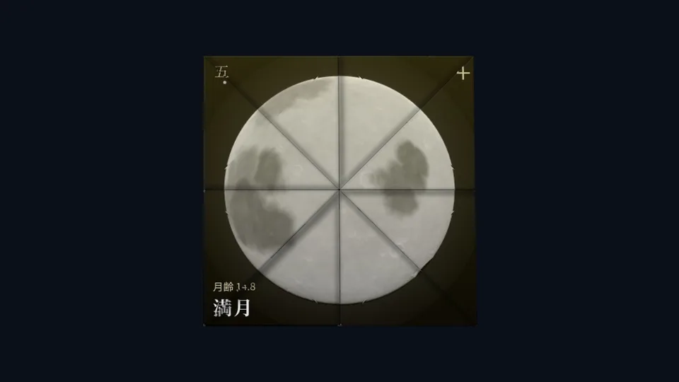
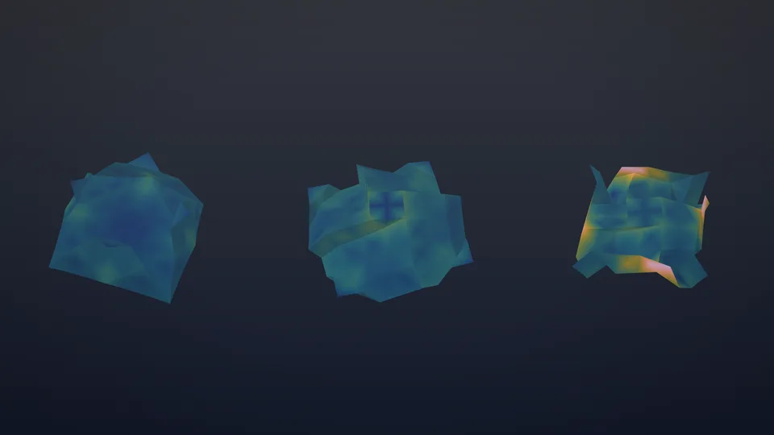
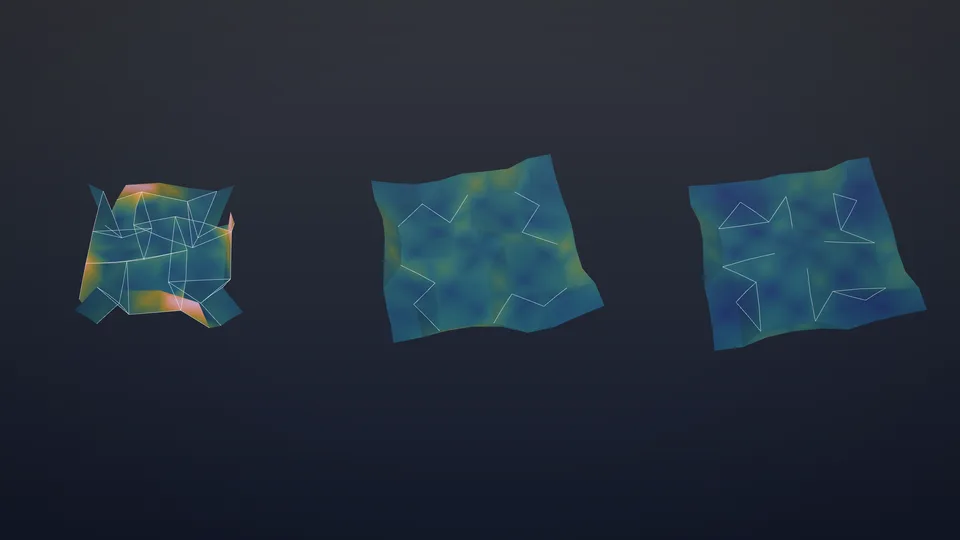

Videos · 動画総集編Collection
月相物語 ・ 折合大全Moon Phases · Oriai Taizen
一枚の紙を畳むと、散らばった絵と色がそろう。 Fold one sheet, and the scattered picture comes together.
01
一枚の紙の山谷を替えて折り直すと、月が満ち欠けする「月相物語」。縦・横・斜め 45° の折り線だけで畳み、表裏の色面がそろう「折合大全」。和紙を順光と逆光で見る場面まで。約 90 秒、音なし。In Moon Phases, one sheet is refolded with different mountain–valley choices and the moon waxes and wanes. In Oriai Taizen, a sheet folds along horizontal, vertical and 45° creases only, and the colour fields on both sides come together — ending with washi seen in front light and back light. About 90 s, no sound.

02
同じ 8×8 の紙でも、山谷の選び方で折りにくさは大きく違う。紙の伸び縮み（歪）を色で示し、63 種から最小・中位・最大の三種を並べて比べる。約 45 秒、音なし。On the same 8×8 sheet, the mountain–valley assignment changes how hard the fold is. Strain in the paper is shown in colour, and three patterns — the lowest, the median and the highest of 63 — are folded side by side. About 45 s, no sound.

03
最も折りにくい型を、三つの折り順で畳む。全部を同時に折るときの峠（歪エネルギーの山）を 100 とすると、折り線の組を一つずつ順に折って 30、組の折り始めと折り終わりを重ねて 17。約 35 秒、音なし。The hardest pattern, folded in three orders. Taking the barrier (the peak of strain energy) for folding everything at once as 100, folding one family of creases at a time gives 30, and overlapping the families gives 17. About 35 s, no sound.

歪と峠の数値は、紙を棒と蝶番の模型に置き換え、各段でつり合わせて求めた計算上の比です（計算の細かさで多少変わります）。実際の紙での折りやすさの検証はこれからです。第41回 折り紙の科学・数学・教育研究集会（2026年11月13日、筑波大学）の発表「折紙パズルの系譜と生成アプリ」に合わせて公開しました。
The strain and barrier figures are ratios computed on a bar-and-hinge model of the paper, equilibrated at each step; they shift somewhat with the resolution of the model, and have not yet been checked against real paper. Published alongside a talk at the 41st Meeting on Origami Science, Mathematics and Education (13 November 2026, University of Tsukuba).
制作：宮本好信By Yoshinobu Miyamoto